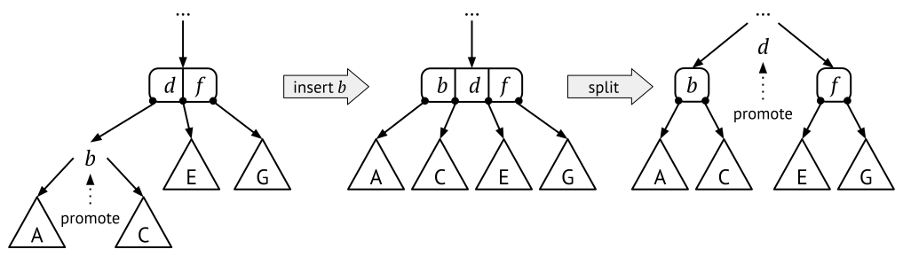
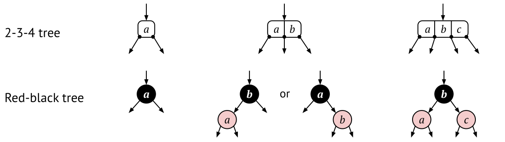
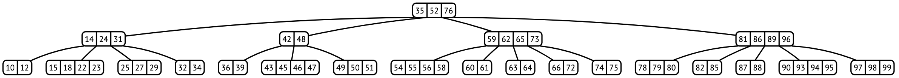

10.4 2-3 trees and B-trees
AVL trees do not ensure that a tree is perfectly balanced – the height invariant cannot give a better guarantee than that the height is within a constant times the optimal height. But if we allow for more than two children per node it is possible to ensure that all trees are perfectly balanced. This is done by the 2-3 trees.
2-3 trees have two kinds of nodes: 2-nodes (normal binary nodes), and 3-nodes, which have two values and three children. The normal BST invariant still holds for all 2-nodes, but it has to be generalised a little for the 3-nodes:
Invariant: 3-node order invariant
For every 3-node with values a and b:
- all values in the left subtree are smaller than a,
- all values in the middle subtree are between a and b, and
- all values in the right subtree are larger than b.
Figure 10.10 shows an example of a 2-3 tree. In this tree, the root is a 3-node: it has two values (18 and 32) and three children. The left child of the root is a 2-node containing the key 12. Because 2-3 trees have two kinds of nodes, we can have a much stricter balance invariant than AVL trees.
Invariant: 2-3 tree balance
All leaves are on the same level, or in other words, every path from the root to a leaf has the same length, or in other words, the tree is perfectly balanced.
Since 2-3 trees have two different kinds of nodes, all operations have to account for both of them, and all possible combinations that can occur. Conceptually the operations are not difficult to understand, but they can be quite complex because of all cases we have to take care of.
10.4.1 Searching in a 2-3 tree
To search for a key k we do the same as for BSTs, start at the root and follow a path down through the tree. When we encounter a 3-node with values a and b we do like this:
- if k<a: search in the left subtree
- if a<k<b: search in the middle subtree
- if b<k: search in the right subtree
As you can see, the same strategy as for BSTs, but more cases to handle.
10.4.2 Inserting into a 2-3 tree
Conceptually the idea is the same as for AVL trees: first we search for the leaf where the value should be inserted, then we insert the value, and finally we rebalance if necessary. However, both the insertion and the rebalancing processes are quite different from BSTs and AVL trees.
Unlike BST insertion, a new child is not created to hold the value, that is, the 2-3 tree does not grow downward. Instead, a 2-3 tries to insert the new value into an existing node. If the node becomes overfull, it is split and the middle value is inserted into its parent. Therefore, a 2-3 tree does not grow downwards, but instead upwards in the tree.
The first thing is to search for the leaf node that would contain the value, if it were in the tree. Then we try to insert the new value into this leaf, by converting the node into a higher-ranked node and insert the value at its correct place.
Inserting into a non-full leaf node.
Therefore, a 2-node becomes a 3-node, and a 3-node becomes a 4-node, and we are done… But wait, there are no 4-nodes!
When a node becomes overfull, we split it – so the 4-node will become two 2-nodes. But wait a little, a 2-node only has room for one value, and we have three values to store – where should the third value go? The solution is to put the low and high values in one 2-node each, and then promote the middle value to the parent.
Figure 10.11 shows how it can look like when we insert c into a leaf 3-node consisting of a and b. The resulting leaf node becomes too big, so we split and promote the middle value (b).
Promoting a value means that we insert it into the parent node. If the parent is a 2-node, then we just change it to a 3-node and we are done. But if the parent is a 3-node, we are back in the same situation as before: we get a 4-node that we need to split, and then we promote its middle value to its parent. This is shown in Figure 10.12.

Inserting when the leaf node needs to be split.
Note that splitting a node and promoting the middle value upwards does not change the height of the tree, as long as we end up in a parent that is a 2-node – because then we can stop our promotion path. This means that the height invariant is not broken.
But what happens if we never reach a 2-node? If we promote all the way up to the root, and the root is also a 3-node, we simply split it and create a new root with the promoted value.
Inserting when the root node needs to be split, adding a new tree
level.
Implementing insertion is not very difficult, but there are quite a lot of cases to handle (for example, if the new element is smaller, or in between, or larger, than the existing elements). On the other hand, you don’t have to implement any rotations, but there is instead just the splitting and promoting.
10.4.3 Deleting from a 2-3 tree
When deleting a value from a 2-3 tree, the basic idea is a mirror of insertion: first we delete the element from the node, then we rebalance the tree to keep the invariants. There are three main cases to consider:
- The simplest case is when we remove from a 3-node that is a leaf – then we can simply remove it, and convert the 3-node to a 2-node.
- The second case is if the leaf node is a 2-node, which contains just one value – then the resulting node will be a “1-node”, which is not valid. This is discussed further below.
- The third case is when we want to remove a value from an internal node. This is similar to when we remove a value from a BST node with two children – we don’t delete the actual node, but instead replace its value with a value from another node which is easier to delete. This turns this case into case 1 or 2.
To solve case 2 we first try to “steal” a value from a sibling. This works if any sibling is a 3-node: then we can rotate over the parent that lies between the nodes, as shown in Figure 10.13.
If neither sibling is a 3-node, we cannot steal anything. In this situation we can instead merge our empty node with a sibling and the parent that lies between. This is the opposite of splitting. When we merge we create a new 3-node with the sibling value and the parent value. The parent value is therefore demoted to its child, and the rank of the parent node is decreased by one.
Demoting and merging is shown in Figure 10.14. In this example we are lucky – the parent is a 3-node so it will become a 2-node and we are done. However, if the parent had been a 2-node, then it would become a 1-node after merging, and so the stealing/merging will continue upwards in the tree.
Although the basic idea of deletion in a 2-3 tree is not very difficult, there are a lot of different cases that we have to handle, so the code becomes quite large. We will not go into more details on how to implement deletion in 2-3 trees.
10.4.4 Complexity analysis
Searching in a 2-3 tree is logarithmic in the number of nodes, O(\log(n)), because the height of the tree is logarithmic.
When we insert into a 2-3 tree, we start from a leaf and try to expand it. If the leaf becomes overfull, we split and promote the insertion to the parent. In the worst case we have to continue promoting all the way up to the root. Since the tree has logarithmic height, this can in the worst case continue a logarithmic number of times. So insertion is also logarithmic, O(\log(n)).
Deletion has exactly the same analysis (but more cases to take care of). In the worst case we have to merge and demote a parent value, and this could continue all the way to the root. Therefore deletion is also logarithmic, O(\log(n)).
10.4.5 Red-black trees and 2-3-4 trees
As we noted earlier, 2-3 trees are rarely used in practice. The reason for this is because it is impractical to handle the different cases – to always have to check if it is a 2-node or a 3-node, and all possible combinations of 2- and 3-nodes.
Of the same reason, 2-3-4 trees are never implemented in the straightforward way. However, there is another way to implement 2-3-4 trees – as normal BSTs where each node has an additional binary feature. This feature is called the “colour”, and a node can be either “black” or “red”. Therefore, this kind of trees are called red-black trees.

The key insight is that any 2-3-4 tree can be converted to a corresponding red-black tree. Figure 10.15 shows how the conversion looks like, for any 2-, 3- or 4-node. All the special cases for insertion and deletion in a 2-3-4 tree can be translated into rules for the red-black tree. The advantage is that we do not need a complicated node structure, but can use our our standard BST nodes (augmented with a colour).
Note that the red-black trees are not perfectly balanced, even though 2-3-4 trees are. This is because a 2-node corresponds to a single red-black node, but a 3-node or a 4-node corresponds to a subtree of height two. Therefore, the height of a red-black tree can be up to twice the height of a perfectly balanced binary search tree. This means that red-black trees are usually slighlty more unbalanced than AVL trees, but on the other hand deleting elements is slightly more efficient than for AVL trees.
There is even a translation from 2-3 trees into a subclass of red-black trees, the so called left-leaning red-black trees (or right-leaning, which are equivalent).
10.4.6 B-trees
As we already mentioned, noone actually uses 2-3 trees or 2-3-4 trees because they are more complex to implement than variants of BSTs, such as AVL trees or red-black trees. But 2-3 trees are still very important, because their basic idea can be generalised to much larger nodes. These are called B-trees, and 2-3 trees is one kind of B-trees.
Any B-tree has a predefined order, which is the largest node type that is allowed. This is also called the maximum degree of the tree. So, a 2-3 tree is a B-tree of order 3, and a B-tree of order 10 can have nodes with up to 10 children.
The invariants for a B-tree of order m are like this:
Invariant: B-tree of order m
For every k-node in a B-tree of order m:
- it has at most m children, that is k \leq m
- if it is an internal node (except the root) it has at least m/2 children, that is, k \geq m/2
- everything in subtree p_{i-1} is smaller than a_i, which in turn is smaller than everything in subtree p_i (for all node values a_1, \ldots, a_{k-1})
In addition, all leaves are on the same level, or in other words, the tree is perfectly balanced.
The second requirement is the reason why 2-3 trees cannot have 1-nodes – because 1 < 3/2. On the other hand, a B-tree of order 4 (that is, a 2-3-4 tree) can have nodes with 2, 3 or 4 children. B-trees of order 5 can only have 3-, 4- and 5-nodes, and so on. Figure 10.16 shows an example B-tree of order 5.
Note that the requirement that all leaves are on the same level, is not enough to guarantee that the height of a B-tree is logarithmic in the number of elements. We also need the second requirement, which says that nodes are not too small.

Insertion into and deleting from a B-tree
When inserting into a B-tree of order m, we do the same as for 2-3 trees: first insert it into a leaf, and if that leaf becomes overfull, we split it and promote the middle element to the parent. If that happens, we know that the overfull node has exactly m+1 children. Splitting this will result in two nodes with size m/2, and the middle element is propagated upwards. So the invariants are preserved by splitting.
Just as for 2-3 trees, deleting results in many cases for stealing elements from neighbouring nodes, and merging when nodes become too sparse.
10.4.7 File systems and databases
B-trees is the most common data structure for managing file systems, as well as very large databases. Normally, the size of a node in the B-tree is chosen to fill a disk block of the particular file system, so a typical B-tree implementation has an order of 100 or more. This means that we can reduce the number of disk accesses, by loading a full B-tree node from the (slow-ish) disk to the (much faster) internal memory.
B-trees of high order are very shallow. For example, assume we have a B-tree with a height of only four (meaning that we have the root, two internal levels, and then the leaves). How many values can we store in such a B-tree if it has order 100?
- the root can store 99 values and have 100 children,
- each of the 100 children can store 99 values and have 100 children,
- each of these 100^2 children can store 99 values and have 100 children,
- so we get 100^3 leaves, each with up to 99 values
This gives 99 + 99 \cdot 100 + 99 \cdot 100^2 + 99 \cdot 100^3 = 99 \cdot (1 + 100 + 100^2 + 100^3) = 100 million. Therefore, a B-tree of order 100 and height 4 can store up to 100 million elements. This is usually enough for most file systems and databases.
10.4.8 B+ trees
B-trees are usually not used in practice – instead the normal implementation is to use B+ trees, or some variant.
B+ trees are optimised for implementing maps, where the search keys are quite small but the values can be pretty large. This is often the case for both file systems and databases. For example, in a file system the key is usually the file path, and the value contains all possible information about the file, such as modification and access dates, and which disk sectors it occupies.
The main difference with a normal B-tree is that the internal nodes and the leaf nodes are different from each other. The internal nodes in a B+ tree only stores the search keys, while all the values are put in the leaves. Since the keys are much smaller than the values, the internal nodes can be much more compact, and therefore the internal nodes can be of a much higher order.
One effect of this difference is that the search keys have to be duplicated in several nodes, so the insertion and deletion algorithms become slightly different. Another positive side-effect is that it becomes very easy to iterate through a range of values in order – there is no need to use recursion for this.